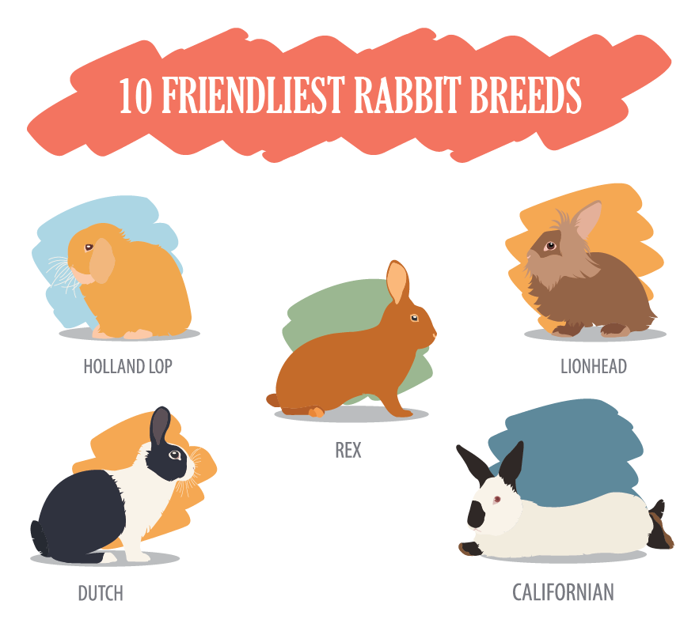

Bunny Heaven
Bunny Heaven
Top 10 Bunny Breeds: Which is Right for You?
Rabbits, or bunnies, are enchanting pets known for their playful nature and endearing appearance. Their diverse breeds offer a range of sizes, colors, and personalities, making it essential to choose the right breed that aligns with your lifestyle and preferences. Here’s a comprehensive guide to the top 10 bunny breeds, helping you determine which might be the perfect fit for you.
1. Holland Lop

The Holland Lop is a popular choice among rabbit enthusiasts for its charming, compact size and gentle temperament. Weighing between 2 to 4 pounds, this breed is characterized by its distinctive floppy ears and sweet demeanor. Holland Lops are ideal for families with children due to their patient nature and relatively low maintenance needs. Their small size makes them suitable for apartment living.
2. Netherland Dwarf
The Netherland Dwarf is one of the smallest rabbit breeds, weighing only about 1.5 to 2.5 pounds. Known for its tiny stature and large, expressive eyes, this breed is energetic and curious. Although their small size makes them adorable, Netherland Dwarfs require a bit more care and attention due to their delicate frame. They are best suited for experienced rabbit owners who can provide a safe and enriching environment.
3. Lionhead

Named for its distinctive mane of fur around the head, the Lionhead rabbit is a striking breed that captivates with its unique appearance. These rabbits weigh between 2.5 to 3.5 pounds and are known for their friendly and playful nature. Lionheads require regular grooming to maintain their luxurious fur. They make excellent pets for families and individuals who can commit to their grooming needs and enjoy interactive playtime.
4. English Angora

The English Angora is renowned for its long, luxurious coat, which requires diligent grooming to prevent matting. Weighing between 5 to 7 pounds, this breed has a gentle and calm personality, making it a great companion for those who enjoy spending time with their pets. The English Angora’s high maintenance grooming needs can be a consideration for potential owners, but its affectionate nature can be a rewarding aspect of pet ownership.
5. Mini Rex

The Mini Rex is known for its velvety, plush coat and playful personality. Weighing between 3.5 to 4.5 pounds, this breed is a smaller version of the standard Rex rabbit. Mini Rex rabbits are affectionate and enjoy interactive play, making them suitable for families and individuals alike. Their coat requires minimal grooming compared to long-haired breeds, making them a convenient choice for first-time rabbit owners.
6. Flemish Giant

The Flemish Giant is one of the largest rabbit breeds, with adults weighing between 13 to 20 pounds. Despite their size, they are known for their gentle and calm demeanor. Flemish Giants make excellent pets for those with ample space and time to care for their needs. They are particularly suited for individuals or families who appreciate a larger, laid-back companion and can manage the extensive feeding and housing requirements.
7. Dwarf Hotot

The Dwarf Hotot is a small breed, weighing about 3 to 4 pounds, distinguished by its striking white fur and black ringed eyes. This breed is known for its friendly and sociable nature. Dwarf Hotots are relatively low-maintenance, making them suitable for both first-time and experienced rabbit owners. Their playful and affectionate behavior makes them a delightful addition to any household.
8. Himalayan

The Himalayan rabbit is known for its distinctive color points on the ears, nose, feet, and tail, contrasting with its white body. Weighing between 2.5 to 4.5 pounds, Himalayans are calm and gentle. They require regular grooming to maintain their coat and are best suited for families or individuals who can provide consistent care. Their serene disposition and unique appearance make them a cherished breed among rabbit lovers.
9. American Fuzzy Lop

The American Fuzzy Lop is characterized by its soft, woolly coat and friendly nature. Weighing between 3.5 to 4.5 pounds, this breed is a variation of the Holland Lop with a longer, fluffier coat. American Fuzzy Lops require regular grooming to keep their fur in good condition. Their affectionate and playful demeanor makes them a wonderful choice for families and individuals who can dedicate time to their grooming needs.
10. Tan Rabbit

The Tan rabbit is known for its sleek, shiny coat and distinctive
markings, resembling the appearance of a wild rabbit. Weighing between
3.5 to 6 pounds, Tan rabbits are active and intelligent. They thrive
in environments that offer plenty of space to explore and play. This
breed is best suited for experienced rabbit owners who can provide an
enriching environment and appreciate their lively nature.
Choosing the Right Bunny Breed
When selecting a bunny breed, consider factors such as size, grooming
needs, activity level, and temperament. Each breed offers unique
characteristics that cater to different lifestyles and preferences.
Whether you are looking for a small, low-maintenance companion or a
larger, more interactive pet, understanding the specific needs and
traits of each breed will help you find the perfect bunny for your
home.
Ultimately, the right breed will align with your ability to provide
proper care and the kind of companionship you desire. By choosing a
breed that fits your lifestyle, you can ensure a happy and fulfilling
relationship with your new furry friend.